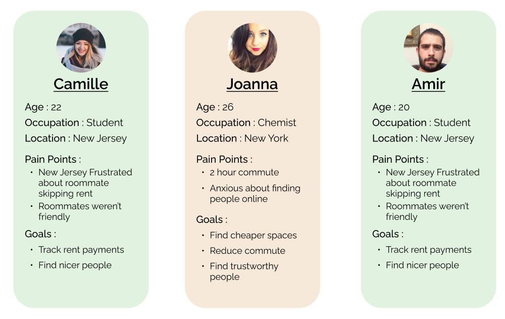

PROBLEM STATEMENT
The common problem many people I spoke too had with their roommates were incompatibility in personality and behaviour which cause severe gaps in communication. How can we help people find roommates that share much of the same values as the users while helping them maintain their responsibilities to one another?
So i thought to create a mobile app to help people find roommates with:
Compatibility matching: A questionnaire that matches people by personality.
Home management: Tracks house chores, rent payments etc, among all housemates.
RESEARCH
USER INTERVIEWS
I conducted interviews and surveys with people I who had both finished college and moved out to find roommates or were still in college living on campus. I spoke with 5 people who shared their past and present experiences with both searching for and living with their roommates.
SURVEYS
I surveyed 15 additional people to gain more information on how users would like to find other people.
IDEATION
USER STORIES
Using the information gathered from user interviews, surveys and other secondary information I was able to determine the average user would be young adults, still in or recently graduated college around the age range of 19 to 27 years old living in the suburbs and working in a city. With this information I created 3 personas to identify potential users.
COMPATIBILITY MATCHING
From the information gathered during the user research process I found that users believed having a verified identity wasn’t enough to make them want to live with someone when looking for roommates online. Nearly all the people interviewed mentioned they had problems with the behaviours, attitudes and personalities of their roommates.
The responses were distributed fairly evenly between preferences. The majority choosing to live
with people who share maintenance needs with them (chores, cleanliness, rent responsible etc).
Which makes sense given the most pressing concern for people who live together, whether they are
close to one another or not, is how they live together.
Roommates being acquainted with a friend
of theirs was a close second. About 5% less of the majority cared more to match with people
their friends know and can vouch for, which suggests to me an understandable security concern.
And the last by personal interests such as hobbies.
With all the data I gathered from the overall research I concluded there needed to be a compatibility element to the app. An interviewee actually suggested I try something akin to how dating websites match people like okcupid or match. I created a question-based algorithm in two parts; the individuals' self and the individuals living standards. Users who have similar wants/needs will see each other more so than those who don’t.
An interviewee suggested that I use a matching algorithm similar to that of dating sites. I researched the compatibility questioning of different sites such as okcupid, match.com etc, and crafted a series of questions to match users on what type of person they are and how they live.
SITE MAPPING & USER FLOW

DESIGN
COLOURS
Green is a cool, calming colour that represents life or energy. From that association it holds meaning in growth, harmony, safety, ambition etc. A green colour palette is fitting for an app that promotes growth and stability among people living together. I used a bright orange to contrast the green for certain indicators and added a great deal of white to contrast the darker text. I wanted to keep the overall app style simple and monotone so I stuck to one shade of the main green colour.
TYPOGRAPHY
SF Pro Text is a simple, modern apple font. It’s well balanced and seems to compliment the interface. I wanted to keep the design spec minimal while adhering to the IOS design guidelines, so I used SF Pro Text for the majority of the interface to maintain the monotony and SF Pro Display for font sizes above 20pts, I mainly used them for headers.